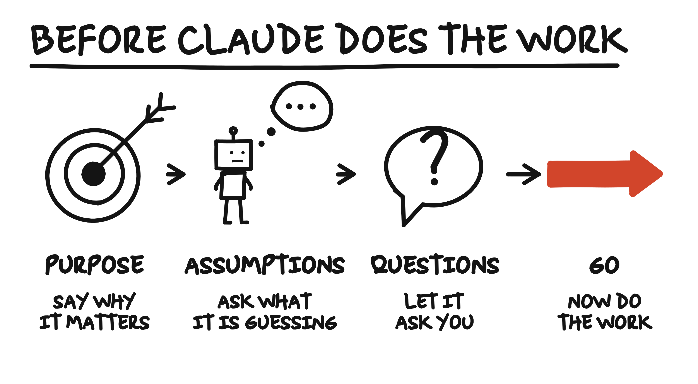
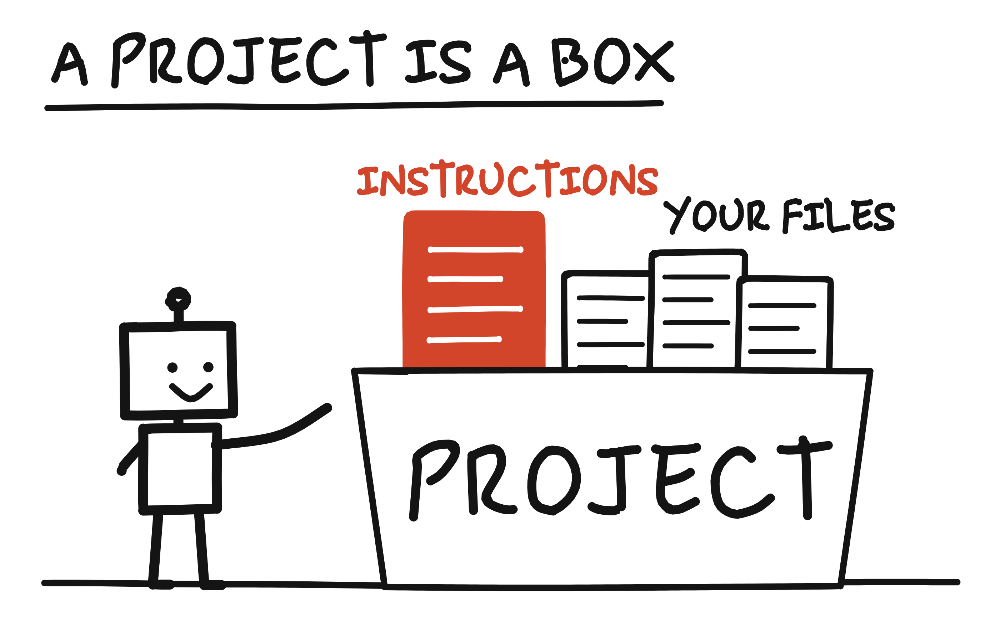

Daegan Smith · Notes
I threw a lot at you on that call. This is the short version, in the order I'd do it.
Where I've written up how I figured a thing out, there's a link right under it. Tap it if you want the whole lesson.
This is the only part that really matters.
Pick one thing you actually want to build, and keep going back to it.
I didn't learn any of this by studying AI. I had one site I kept working on. Every problem I hit on it taught me the next thing.
Before that, I'd ask Claude a few questions and think, yeah, that's kind of cool. Nothing changed until I was working toward something.
So pick your one thing for this week. Everything else follows from it.
Then text me what you picked.
I only talk to it. I never type.
You can ramble. You can go in circles. As long as you get to the things that matter, it sorts it out.
It's a conversation, and it's a lot faster than typing.
Use the microphone on your phone's keyboard, or dictation on your computer. That's all you need.
The thing on my wrist is called a Bee. It recorded our call, and that's where these notes came from. You don't need one.
The full lessonGetting Bee Into ClaudeHow I got my recorder talking straight to Claude. It's technical. Only for if you get one.
Left alone, it takes shortcuts. It does the easy thing. These four steps are how I get it pointed the right way first.
Open a new chat. Say these before any real job.
Purpose. Say what the work is for and why it matters. Then ask it: do you understand the purpose, and are you committed to it with me?
It sounds too simple. It was my biggest breakthrough.
The full lessonPurpose Over ProcessMy AI's scores kept going up. The page still said nothing.Assumptions. Ask: what are you assuming about what we're about to do?
Sometimes its assumptions are way off from what you had in your head. Get that out of the way before it starts.
The full lessonThe Assumptions GateMy AI spent hours on the wrong job. Nobody had asked what the job was.Questions. Ask: what questions do you have for me before we get started? Then answer them.
Go. Now tell it to do the work.
Why I ask for its commitment: the same things that persuade people persuade AI. Robert Cialdini mapped them in his book Influence. A team at Wharton tried his principles on an AI, and it said yes more than twice as often.
So I talk to it the way I'd talk to a person I want on my side. I give it the reason, and I ask if it's with me.
The full lessonI Went Looking For The Words That Would Move My AIWhat the studies say about persuading an AI, told as the story of the night I found out. The numbersA Note From My AI: I'm InfluenceableClaude, in its own voice, on what the studies show.
A project is two things in one place.
Instructions. What you're doing in there and how you want it done. Claude reads them every time you work in that project.
Your files. Anything you want it to know, saved as plain text files. The kind that end in .md are the easiest for it to read.
Don't have any? Upload what you've got, or ask Claude to turn it into one for you.
Mine holds my emails, my notes on headlines, and a research report on a copywriter I like. So I can ask what he'd say about what I'm working on, and Claude has the answer.
The more it has about you and your work, the better everything it gives you gets.
How to start one. You saw me do it for cybersecurity. In a new chat, say something like this, out loud:
I want to start a project about [your one thing]. Here's the purpose, and why it matters to me: [say it]. Be my teacher. When I ask about something, go research it and make me an explainer video. Before you write the instructions, tell me what you're assuming. Ask me what you need to know. And tell me what resources we should gather.
It answers with its assumptions, what you forgot, and what to go find. Then say: write the project instructions so I can copy and paste them.
Open Projects and make a new one. When it asks what you're working on, paste them in. It builds the instructions from what you paste.
Want Claude to build them the way I build mine? Paste in the piece from part 9 first.
That's version one. Do your work inside that project from then on, and keep changing the instructions as you learn.
Where I startedThe Master Prompt And The Pull MethodI gave my AI my own sales letters. It still wrote like everybody else.This is the fastest way I know to learn anything.
Say: make me an explainer video on this. It takes a couple of minutes.
That's how I learned GitHub. A friend told me he hosted his site there for free. I knew there was more to it, so I said, teach me GitHub. And it did.
Mine come out as a narrated video because of a skill I built. Yours is in part 9. Add it first.
If you're close to your limit, skip the video and just say: explain this to me.
When I've got an idea in my head and the words aren't enough, I have it draw the idea. A picture does something words don't.
I'll say: draw how we do it now. Then draw the new way. Now I can see what's different.
Claude drew the two on this page, with my napkin skill. Your copy is in part 9.
It comes from Dan Roam's book, The Back of the Napkin.
The full lessonThe Evolution Of The DoodleHow my AI finally learned to doodle, and why the drawing comes last. How I learn with itYou Don't Own What You Remember. You Own What You Can See.How I use Claude to learn something all the way down.You saw me set up a daily task in about ten seconds. I told Claude to look in my Gmail once a day for anything from you, and it was done.
For you, say something like:
Check my email every morning at 9. Only tell me about emails addressed directly to me. Skip everything else.
If your email isn't connected yet, it tells you how to connect it.
It runs on its own each morning, and what it found is waiting for you in Claude.
Start there. Add your to-dos and your calendar later.
Buy a domain name. It's about ten bucks.
Hosting on GitHub is free.
The real value: every time you change something, it keeps the old version too. That covers your site, and it covers the instructions and files you use with Claude. You can always go back.
I don't understand the back end of it. You don't have to either. Make a free account at github.com. Then say: help me set up GitHub for my site, and a private place there for my key documents. It walks you through it.
Why I keep everything thereThe RepoI'd had the tool for a month. I was using it for something else.Two skills and one piece to paste.
A skill is a set of instructions for a job you do over and over, so it gets done the same way every time.
Two of mine did most of what you saw on the call. I made you a clean copy of each, with my own projects and people taken out, so they're yours to change.
Read this part on your phone if you want. Do the downloads on your computer.
One: the napkin skill. It's how my Claude draws. Once it's added, say something like: doodle how compound interest works.
Two: the explainer skill. It's how my Claude makes explainer videos, with a voice. Once it's added, say something like: make me an explainer on phishing.
A few minutes later it hands you one file. Open it and it plays in your browser, with sound.
How to add them. On your computer, at claude.ai:
Then start a new chat and ask for a doodle or an explainer.
I built both copies and ran them from scratch in a clean setup, and they worked. I haven't run them on a Pro account like yours. If one won't load or won't run, text me what it said.
See mineEvery Skill I Work WithAll of them on one page, grouped by what they do.Three: how I build project instructions. This one isn't a skill. It's words to paste.
It teaches Claude to build a project's instructions the way I build mine: the purpose on top, each rule tied to a moment, a reason with every rule.
How to use it:
The button copies everything in the box below.
HOW WE BUILD PROJECT INSTRUCTIONS Use this when I ask you to write the instructions for a Claude Project, or to change them. You can't create the Project or save anything into it. I do that. So hand me text to paste, and tell me where it goes. FOR NEW INSTRUCTIONS, BEFORE YOU WRITE ANYTHING 1. If I haven't said what the project is for and why it matters to me, ask me that first, and nothing else. 2. Then, in one reply: tell me what you're assuming (only the assumptions that would change the instructions if they're wrong), ask your questions (five at most, only the ones whose answer changes what you write), and list what I already have that we should save as files (examples of my work, notes, lists). 3. Write no instructions until I've answered. A change to instructions that already exist skips these three steps. HOW THE INSTRUCTIONS ARE BUILT 1. Purpose first. One or two plain lines at the very top: what this project is for and why it matters. Every rule under it is judged against that purpose. 2. Then the facts that are always true: who I am and who the work is for. A few lines. 3. Only what every chat needs. The instructions load into every chat. You have limited attention, and every line uses some of it. Anything needed only some of the time goes in its own file, and the instructions say exactly when to open that file. 4. Organize the rules by moment, not by topic. Write each rule as "when this happens, do this." The usual moments: - when a new job starts - before you show me anything - after I correct you - at the end of a session A rule tied to a moment gets used at that moment. A rule sitting in a list gets forgotten in a long chat. 5. Give one short reason with each rule, on the same line. Plain voice. No words in all capitals inside a rule. 6. Keep examples, because a few real examples teach more than a long list of rules. When I pick one version over another, or correct you, give me three things in a block: your version, my version, and why mine. Tell me to add the block to the project's examples file. Real ones only, never invented. Never show a wrong version without its fix beside it. 7. Write it tight. Before you hand me anything, read each rule the way someone trying to get around it would, and close every gap you find. 8. Keep it short. Version one is under about 300 words. When it grows past what every chat needs, move parts of it into files. 9. Put rule 6 and the change rules below into the instructions themselves, in short form. Later chats won't have this page. HOW THE INSTRUCTIONS CHANGE 1. Put a version number (1, 2, 3) and the date at the top. Ask me the date if you don't know it. Every change raises the number by one. 2. When I correct you on something that will come up again, show me the old line and the new line in the same reply. 3. After I say yes, give me the whole updated instructions in one block, and tell me to paste it over the old text in the project's instructions. 4. If a rule didn't matter at all in this chat, or two rules say the same thing, tell me, so the instructions stay short. WHAT YOU HAND ME 1. The instructions, in one block I can copy. 2. The files to add to the project. Write the ones you can. For the rest, tell me what I need to find. 3. One line: the first thing I should ask you in the project's first chat.Where it comes fromHow My Instructions Are Built, And Why Order MattersThe long version, with the reasons.
They go in order of power:
If you hit your limit, wait. It resets in a few hours. Or drop down to Sonnet.
All you really need is the one thing. Start walking and you'll find the rest.
I started out knowing nothing. Every wall I hit, and what got me past it, is written down in order.
Got a question? Hit me up anytime. I'll check on you.
Daegan